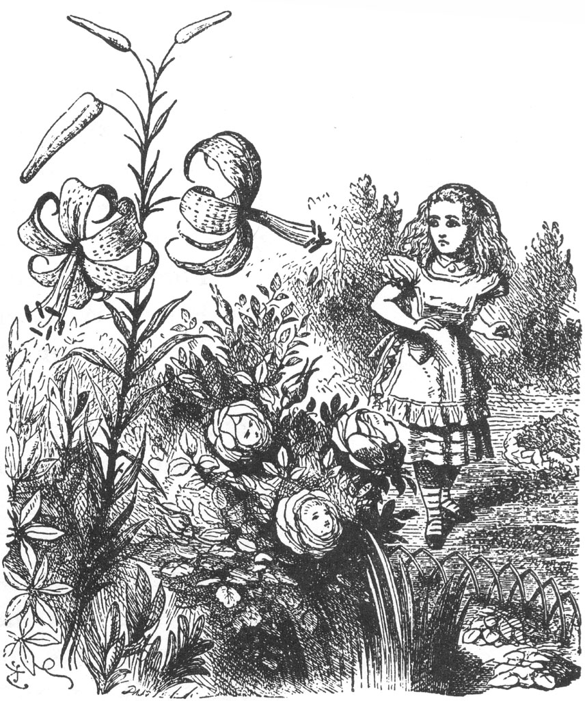
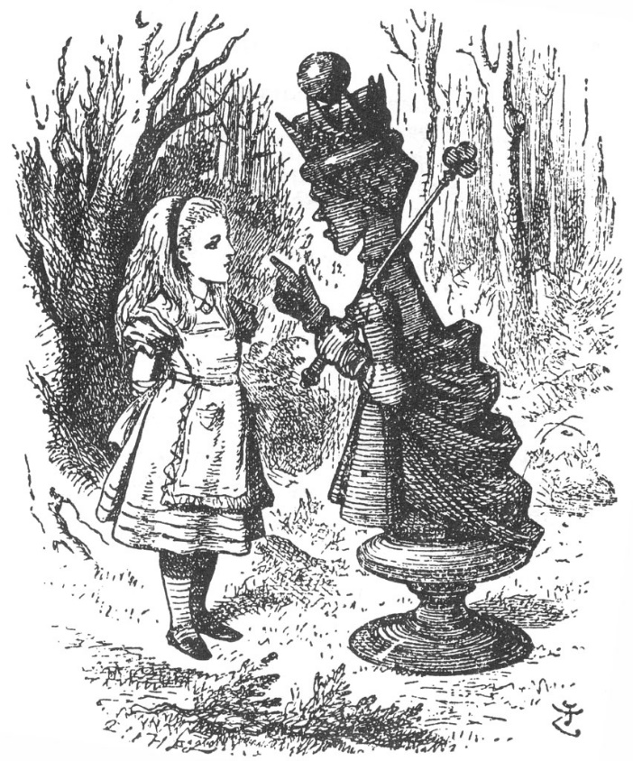
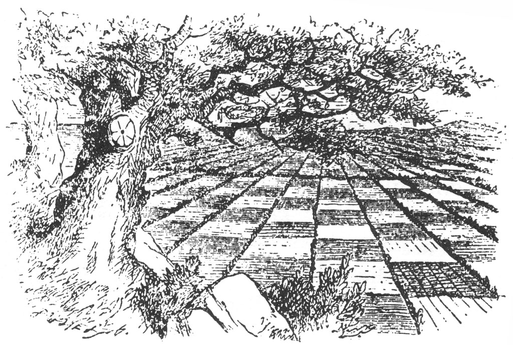
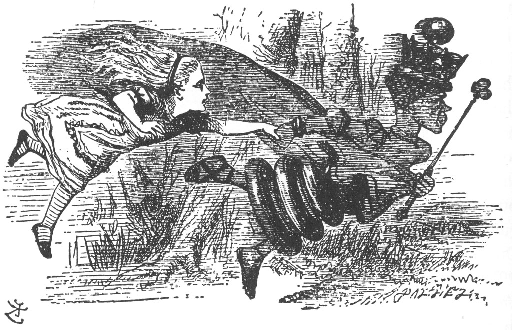

“Şu tepeye bir çıkabilseydim,” dedi Alice kendi kendine, “bahçeyi daha yakından görebilirdim; neyse, en azından şu dosdoğru bahçeye giden bir patika, ah hayır, değilmiş...” (patika boyunca birkaç metre gidip, bir iki keskin dönemeci döndükten sonra), “ama sanırım sonunda oraya çıkacak. Fakat ne çok da kıvrım var! Şaşılacak şey doğrusu. Patikadan çok tirbişona benziyor! Neyse, sanırım bu dönemeç tepeye çıkıyor... Hayır çıkmıyor. Doğruca eve gidiyor! Öyleyse diğer yolu bir deneyeyim.”
Öyle de yaptı: Bir dönemecin ardından bir diğerini deneyerek, bir aşağı bir yukarı dolaşıp durdu; ama ne yaparsa yapsın boyuna eve geri geliyordu. Hattâ bir keresinde bir dönemeci her zamankinden daha hızlıca döndüğünde, durmasına bile fırsat kalmadan, kendini evin önünde buldu.
“Bu konuda konuşmanın hiçbir yararı olmaz,” dedi. Alice, eve bakıp, sanki onunla tartışıyormuşçasına “Şimdi içeri girmeyeceğim. Biliyorum, aynadan içeriye tekrar geri gitmeliydim... tekrardan eski odama geri dönmeliydim... Ama bu bütün serüvenlerimin sonu olurdu!”
Böylece, kararlı bir şekilde sırtını eve dönüp bir kez daha patikadan aşağıya inmeye koyuldu, tepeye varana dek yola dosdoğru devam etmeye kararlıydı. Birkaç dakika her şey yolunda gitti, tam “bu sefer bunu gerçekten yapacağım” diyordu ki”... patika aniden bir dönemece girip silkindi (sonradan olayı böyle tarif edecekti) ve sonra da Alice kendini yine evin kapısında buldu.
‘‘Of, ne berbat şey!” diye çığlık attı. “Böyle sürekli yoluma çıkıp duran bir evi ömrümde hiç görmedim. Hem de hiç!”
Yine de, tepe öylece karşısında duruyordu, öyleyse yeniden işe başlamaktan başka yapacak bir şey de yoktu. Bu sefer de, etrafı papatyalarla çevrili, ortasında uzayıp giden bir söğüt ağacının yer aldığı bir çiçek bahçesine vardı.

“Ah, Pars Zambağı,” dedi Alice, rüzgarda zarifçe sallanıp duran çiçeğe seslenerek, “keşke konuşabilseydin!”
“Bizler de konuşabiliriz,” dedi Pars Zambağı, “tabii ki konuşmaya değer birileri olduğunda.”
Alice öyle şaşırmıştı ki, bir süre tek kelime edemedi; dili tutulmuş gibiydi. Sonunda, Pars Zambağının öylece sallanıp durduğu bir sırada, ürkek bir sesle, hattâ neredeyse fısıltıyla yeniden konuşmaya başladı. “Bütün bu çiçekler konuşabilirler mi?” “Sen ne kadar konuşabiliyorsun,” dedi Pars Zambağı. “Hem de daha yüksek sesle konuşurlar.”
“Biliyorsun, bizim önce söze başlamamız pek yakışık almaz,” dedi Gül, “Ne zaman konuşmaya başlayacaksın diye merak edip duruyordum! Kendi kendime dedim ki, ‘Bu kızın yüzünde, çok zekice olmasa da yine de bir anlam var!’ Hem, rengin de yerinde ve uzun süre de dayanır.”
“Renk umurumda değil,” diye anımsattı Pars Zambağı, “keşke, taç yaprakları biraz daha yukarı doğru kıvrık olsaydı, çok daha güzel olurdu,”
Alice eleştirilmekten hoşlanmazdı, o yüzden başladı sorular sormaya: “Size bakacak kimsecikler yok, buralara böylece ekilip bırakılmış olmaktan korkmuyor musunuz?”
“İşte ortada ağaç var ya,” dedi Gül, “bundan iyisi can sağlığı.” “Ama herhangi bir tehlike durumunda, o ne yapabilir ki?” diye sordu Alice.
“Daldalanmanızı,” dedi Gül.
“‘Dal-dal-dal-daldalan!’ diye bizi dallarının altına çağırır,” diye çığlık attı bir Papatya. “Ağacın kollarına da bu yüzden dal denir!”
“Bunu bilmiyor muydun?” diye haykırdı bir başka Papatya. Tam bu sırada yeniden hep bir ağızdan, ortalık minik tiz seslerle doluşuncaya değin bağrışmaya başladılar. “Hepiniz susun!” diye bağırdı Pars Zambağı, heyecan içinde tir tir titreyip öfkeyle kendini bir o yana bir bu yana sallayarak. “Onlara ulaşamayacağımı biliyorlar,” diye nefes nefese söylendi, titrek kafasını Alice’e doğru eğerek, “yoksa böyle davranmaya cüret edemezler!”
“Boş ver!” dedi Alice yumuşak bir ses tonuyla, sonra da yeniden konuşmaya başlamak üzere olan papatyalara doğru eğilerek, “Eğer çenenizi kapatmazsanız, sizi koparırım,” diye fısıldadı.
Anında sessizlik hakim oldu ve birkaç pembe papatya bembeyaz kesildi.
“Evet!” dedi Pars Zambağı, “Papatyalar bunların içinde en beteri. Biri konuşmaya başladığı anda, diğerleri de başlıyor. Böyle devam etmeleri bir bitkiyi kurutup soldurmaya yeter de artar bile!”
“Nasıl oluyor da hepiniz bu kadar güzel konuşabiliyorsunuz?” dedi Alice, böyle bir iltifatla onu sakinleştirmek umuduyla “Daha önceleri birçok bahçeye gittim, ama hiçbirinde çiçekler konuşamı-yordu.”
“Elini yere koy ve toprağı hisset,” dedi Pars Zambağı. “O zaman neden olduğunu anlayacaksın.”
Alice de öyle yaptı. “Çok sert,” dedi, “fakat bununla ne ilgisi var, anlayamadım.”
“Birçok bahçede,” dedi Pars Zambağı, “bitki yataklarını çok yumuşak yapıyorlar... o yüzden de çiçekler hep uykuda oluyor.”
Bu çok açıklayıcı bir nedenmiş gibi geldi: Alice bunu öğrenmekten çok hoşnut kalmıştı. “Bunu daha önce hiç düşünmemiştim!” dedi.
“Bence sen zaten hiç düşünmüyorsun,” dedi Gül, oldukça sert bir ses tonuyla.
“Bundan daha aptal görüneni ömrümde hiç görmedim,” dedi Menekşe, bunu öyle aniden söylemişti ki, Alice yerinden zıpladı; öyle ya daha önce hiç sesi çıkmamıştı.
“Kapa çeneni!” diye bağırdı Pars Zambağı. “Sanki daha önce birini görmüştün! Başını yaprakların altına sokup horlayıp duruyorsun. Bir tomurcuktan daha fazla bir şey bilmiyorsun dünyada olup bitenler hakkında!”
“Bahçede benden başka insan var mı?” dedi Alice, Gül’ün son sözlerini pek dikkate almayarak.
“Senin gibi hareket edebilen başka bir çiçek daha var bu bahçede,” dedi Gül, “bunu nasıl yaptığınızı çok merak ediyorum...” (Sen hep merak ediyorsun,” dedi Pars Zambağı), “ama onunki daha bir gür.”
“Tıpkı benim gibi mi?” diye sordu Alice merakla. “Buralarda bir yerde başka bir küçük kız daha var ha!” diye aklından bir düşünce geçti.
“Olur şey değil ama onun da senin gibi tuhaf bir şekli var,” dedi Gül. “Fakat o senden daha kızıl... Sanırım, taç yaprakları da daha bir kısa.”
“Taç yaprakları, tıpkı bir yıldız çiçeği gibi yukarı doğru iç içe geçmiş,” diye söze karıştı Pars Zambağı. “Seninki gibi böyle aşağı doğru sarkık değil.”
“Ama bu senin suçun değil,” diye ekledi Gül kibarca. “Biliyorsun ki artık solmaya başlamışsın... bir çiçek taç yapraklarının birazcık dağılmaya başlamasına engel olamaz.”
Bu düşünce Alice’in hiç de hoşuna gitmemişti; bu yüzden konuyu değiştirmek için, “Buralarda hiç gözükür mü?” diye sordu.
“Bana kalırsa biraz sonra onu burada göreceksin,” dedi Gül. “Dikenli türden bir şey.”
“Dikenleri neresinde?” diye sordu Alice merak içinde.
“Tabii ki başının etrafında,” diye karşılık verdi Gül. “Neden sende yoktur diye çok merak ediyorum doğrusu. Bu hep böyle diye düşünüyordum.”
“Geliyor!” diye çığlık attı, Hezaren Çiçeği. “Rap Rap Rap duyuyorum, çakıllı yolda!”
Alice merakla etrafına bakındı ve gelenin Kızıl Kraliçe olduğunu gördü. İlk sözü, “Amma da büyümüş,” oldu. Gerçekten de öyleydi: Alice onu küllerin içinde ilk bulduğunda, boyu sadece yedi buçuk santim civarındaydı... Şimdiyse Alice’ten yarım kafa daha uzundu!
“Temiz hava işte böyle yapar,” dedi Gül: “Ne harika bir hava var burada.”
“Gidip onunla bir tanışayım,” dedi Alice, çünkü çiçekler ne kadar ilginç olsa da, gerçek bir Kraliçe’yle konuşmak çok daha muhteşem olacak diye düşündü.
“Bunu yapman mümkün değil!” dedi Gül: “Yolunu değiştirsen bence daha iyi olur.”

Bu, Alice’e çok saçma geldi, o yüzden hiçbir şey demeyip, doğruca Kızıl Kraliçe’ye doğru yola koyuldu. Şaşkınlık içinde bir anda onun gözden kaybolduğunu gördü, kendisi de yeniden ön kapıdaydı.
Birazcık sinirlenerek geri çekildi, her yerde Kraliçe’yi arayıp durduktan sonra (en sonunda çok uzaklarda bir yerde olduğunu fark etti), bu sefer ters yönde yürüme planını bir denemeyi aklından geçirdi.
Bu plan başarılı oldu. Yürümeye başlayalı daha bir dakika bile olmamıştı ki, Kızıl Kraliçe’yle yüz yüze geldi; uzun zamandır gitmeyi hedeflediği tepe de tam karşısındaydı.
“Nereden geliyorsun,” dedi Kızıl Kraliçe “ve nereye gidiyorsun? Yukarı bak ve güzelce konuş, parmaklarınla da böyle oynayıp durma.”
Alice, tüm bu talimatlara uydu ve dili döndüğünce yolunu kaybettiğini söyledi.
“Yolumu demekle ne kastettiğini anlamıyorum,” dedi Kraliçe: “Buradaki tüm yollar bana ait... ama söyle bakalım buralara neden geldin?” diye ekledi çok daha kibar bir ses tonuyla. “Ne söyleyeceğini düşünürken reverans yap. Zaman kazandırır.”
Alice, bu durum karşısında birazcık hayrete düşmüştü, ama Kraliçe’den öyle korkmuştu ki ona inanmayacak durumda değildi. ”Eve gittiğimde bunu deneyeceğim,” diye düşündü kendi kendine, “bir daha akşam yemeğine geç kaldığımda,”
“Cevaplama zamanın geldi,” dedi Kraliçe saatine bakarak: “Konuşurken de ağzını birazcık daha aç ve her seferinde ‘Majesteleri’ de.”
“Sadece bahçenin nasıl bir yer olduğunu görmek istedim, Majesteleri...”
“Tamam,” dedi Kraliçe, Alice’in başını okşayarak. Alice bundan hiç hoşlanmamıştı. “Ama sen buna bahçe desen de, ben öyle bahçeler gördüm ki, bununla karşılaştırıldığında, burası bozkır kalır.”
Alice, bu konuda tartışmaya kalkışmayıp konuşmasına devam etti:”... Acaba bir yolunu bulup şu tepeye çıkabilir miyim diye düşünüyordum...”
“Tepe diyorsun ya,” diye sözünü kesti Kraliçe, “sana öyle tepeler gösterebilirim ki, onlarla karşılaştırdığında buna vadi dersin,”

“Hayır, demem,” dedi Alice, sonunda onunla zıtlaşmaya kalktığının şaşkınlığı içinde: “Tepe vadi olamaz, bunu siz de biliyorsunuz. Bu saçmalık...”
Kızıl Kraliçe başını salladı. “Sen istersen buna ‘saçmalık’ de, ama ben öyle saçmalıklar gördüm ki, bununla karşılaştırıldığında bu onların yanında sözlüktekiler kadar mantıklı kalır!”
Alice yeniden reverans yaptı, öyle ya Kraliçe’nin ses tonundan onun birazcık gücenmiş olabileceğinden korkuyordu, sonra da küçük tepeye varıncaya değin sessizlik içinde yürüdüler.
Alice, bir süre hiç sesini çıkarmadan, kırlık alanın dört bir yanına baktı... ne tuhaf bir alandı bu böyle. Yan yana akıp giden birkaç küçük çay vardı; aralarındaki toprak da, çayları birleştiren çitlerle karelere bölünmüştü.
“Tıpkı kocaman bir satranç tahtası gibi bölünmüş bir arazi desem!” dedi Alice sonunda. “Bir yerlerde hareket edip duran kimi insanlar olmalı... ha işte oradalar da!” diye ekledi sevinç içinde ve sözlerine devam ettikçe kalbi heyecandan küt küt atmaya başladı. ”Burada kocaman bir satranç oyunu oynanıyor... bütün dünyada... eğer dünya buysa tabii. Ah! Ne eğlence ama! Onlardan biri olmayı nasıl da isterdim! Bir katılabilsem onlara, Piyon olmak bile umurumda olmazdı... tabii ki en çok Kraliçe olmayı istesem de.”

Bunu söylediği sırada, yanında duran gerçek Kraliçe’ye utana sıkıla şöyle bir baktı, ama arkadaşı buna sadece sevimli sevimli gülümsedi ve “Bundan kolay ne var, Lily daha çok küçük olduğundan, eğer istersen, Beyaz Kraliçe'nin Piyonu olabilirsin. Başlangıç olarak İkinci Karedesin; Sekizinci Kareye vardığında da Kraliçe olacaksın...” Tam bu anda, her nasılsa koşmaya başladılar.
Alice, daha sonraları bunu düşündüğünde, nasıl olup da koşmaya başladıklarını bir türlü anlayamamıştı. Yalnızca anımsayabildiği kadarıyla el ele koşuyorlardı; Kraliçe öyle hızlıydı ki, Alice ona yetişmek için elinden geleni yapıyordu. Kraliçe ise hâlâ, “Daha hızlı, daha hızlı!” diye bağırıp duruyordu, ama Alice daha hızlı koşamayacağını biliyordu, tabii ki bunu söyleyecek nefesi olmasa da.
En tuhaf olanı da ağaçların ve etraflarındaki diğer şeylerin yerlerini hiç değiştirmemesiydi; ne kadar hızlı giderlerse gitsinler, sanki hiçbir şeyi geçmiyor gibiydiler. “Acaba her şey bizimle beraber mi geliyor?” diye düşündü zavallı şaşkın Alice. Kraliçe de sanki onun düşüncelerini okuyor gibiydi, çünkü “Hızlan! Konuşmaya çalışma!” diye bağırıyordu.
Neden bunu yaptığına dair Alice’in hiçbir fikri yoktu. Sanki bir daha hiç konuşamayacak gibiydi; nefes nefese kalmıştı; Kraliçe ise, “Daha hızlı! Daha hızlı!” diye bağırmayı sürdürürken, bir yandan da onu peşinden sürüklüyordu. “Yaklaştık mı?” diye en sonunda sorabildi Alice, soluğu kesile kesile.
“Yaklaştık mı!” diye tekrarladı Kraliçe. “Orayı geçeli on dakika oldu! Hızlan!” Ses çıkarmadan bir süre daha koştular, rüzgar sanki kulaklarının içinde esiyor, neredeyse saçlarını yerinden söküp alacakmış gibi geliyordu Alice'e.
“Şimdi! Şimdi!” diye bağırdı Kraliçe. “Şimdi daha hızlı! Daha hızlı!” Öyle hızlı koşuyorlardı ki, sanki ayakları yere değmiyor, havada kayarcasına ilerliyorlardı. Alice artık bitkin düşmek üzereydi ki, nihayet birden durdular. Alice kendini yerde otururken buldu, soluk soluğa kalmıştı ve başı dönüyordu.
Kraliçe, onu bir ağaca yaslayıp, kibarca, “Şimdi biraz dinlenebilirsin,” dedi.
Alice, büyük bir şaşkınlık içinde etrafına bakındı. “Tabii ya, san-. ki hep bu ağacın altındaydık gibi geliyor bana! Her şey eskiden olduğu gibi!”
“Tabii ki öyle,” dedi Kraliçe “başka ne bekliyordun ki?”
“Ee, şey, bizim ülkemizde,” dedi Alice nefes almakta hâlâ zorlanarak, “bizim yaptığımız gibi bir süre çok hızlı koşarsanız,... genellikle bir yere varırsınız.”
“Sizinki ağır bir ülkeymiş!” dedi Kraliçe. “Şimdi, gördüğün gibi burada, var gücünle koştuğunda ancak olduğun yerde kalırsın. Bir yerlere varmak istiyorsan, en azından şu an koştuğunun iki katı koşmalısın!”
“Denemeyeyim lütfen!” dedi Alice. “Burada kalmaktan oldukça hoşnudum... Yalnız çok sıcak ve susadım!”
“Hoşuna gidecek şeyi biliyorum,” dedi Kraliçe yumuşak bir şekilde, cebinden küçük bir kutu çıkartıp, “bisküvi al,” dedi.
Bisküviyi canı istememesine karşın Alice “Hayır,” demenin kibar bir davranış olmadığını düşündü. Bu yüzden bisküviyi aldı, yemeye çalıştı. Bisküviler kupkuruydu; hayatında böyle neredeyse boğulacak hale geldiğini hiç anımsamıyordu.
“Sen serinlerken,” dedi Kraliçe, “ben de ölçümleri yapayım,” Cebinden santimetrelere bölünmüş bir kurdele çıkardı ve oraya buraya küçük ağaç çiviler saplayarak yeri ölçmeye başladı.
“İki metrenin sonunda,” dedi Kraliçe, bir yandan da uzaklığı ölçmek için ağaç çiviyi yere saplayarak, “sana talimatları vereceğim... Bir bisküvi daha?”
“Teşekkür ederim,” dedi Alice, “bir ta ne fazlasıyla yetti!”
“Susuzluğun umarım geçmiştir,” dedi Kraliçe.
Alice, buna ne karşılık vereceğini bilmiyordu, neyse ki Kraliçe cevabını beklemeden konuşmasına devam etti. “Üç metrenin sonunda talimatları tekrarlayacağım... ola ki unutursun diye. Dört metrenin sonunda, sana hoşçakal diyeceğim. Beş metrenin sonunda da, gideceğim.”
Kraliçe, bu arada bütün ağaç çivileri yerlerine saplamıştı; Alice onun ağaca doğru geri dönüşünü büyük bir ilgiyle seyrediyordu.
Kraliçe sonra da hat boyunca yavaş yavaş yürümeye başladı ve ikinci metrenin sonundaki çiviye geldiğinde, arkaya dönüp, “Piyon ilk hamlede iki kare ilerler. Bu yüzden Üçüncü Kareye kadar çok kolay ilerleyeceksin... sanırım trenle... Dördüncü Kareye çarçabuk varacaksın. Sahi, bu kare Tumbadik ile Tumbadız’ın... Beşincisi neredeyse sular altında... Altıncısı da Yumurta Adam’a ait... Ama sen bir şey söylemeyecek misin?”
“Ben... Ben, bir şey söylemem gerekir miydi bilmiyordum... yani biraz önce,” dedi Alice kekeleyerek.
“Bana bütün bunları anlatmanız büyük nezaket, demen gerekirdi,” diye devam etti Kraliçe onu ciddi ciddi azarlayarak. “Neyse, söylendiğini kabul edelim... Yedinci Kare tamamıyla ormandır... Ama şövalyelerden biri sana yol gösterecektir... Sekizinci Karede birlikte Kraliçe olacağız. Bu, şenlik ve eğlence zamanı demek!” Alice, yerinden kalkıp reverans yaptı ve yerine oturdu.
Bir sonraki ağaç çivide, Kraliçe yeniden döndü ve şöyle dedi “Bir şeyin İngilizcesini düşünemediğinde Fransızca konuş... yürürken de ayak parmaklarını dışa döndür ve kim olduğunu hiç unutma!” Bu kez Alice'in reverans yapmasını beklemeyip, bir sonraki ağaç çiviye doğru telaşla gitti, dönüp ‘hoşçakal’ dedi ve sonra acele acele son kareye gitti.
Nasıl olduğunu Alice hiç anlayamadı ama Kraliçe tam en son çiviye geldiği anda, bir anda kayıplara karıştı. Havaya mı uçtu, yoksa hızla koruluğa doğru mu koşup gitti (çok da hızlı koşabiliyordu, diye aklından geçirdi Alice), bunu kestirmenin imkânı yoktu, ama gitmişti. Alice, Piyon olduğunu anımsamaya başladı, hamle yapma zamanı da çok yakındı.